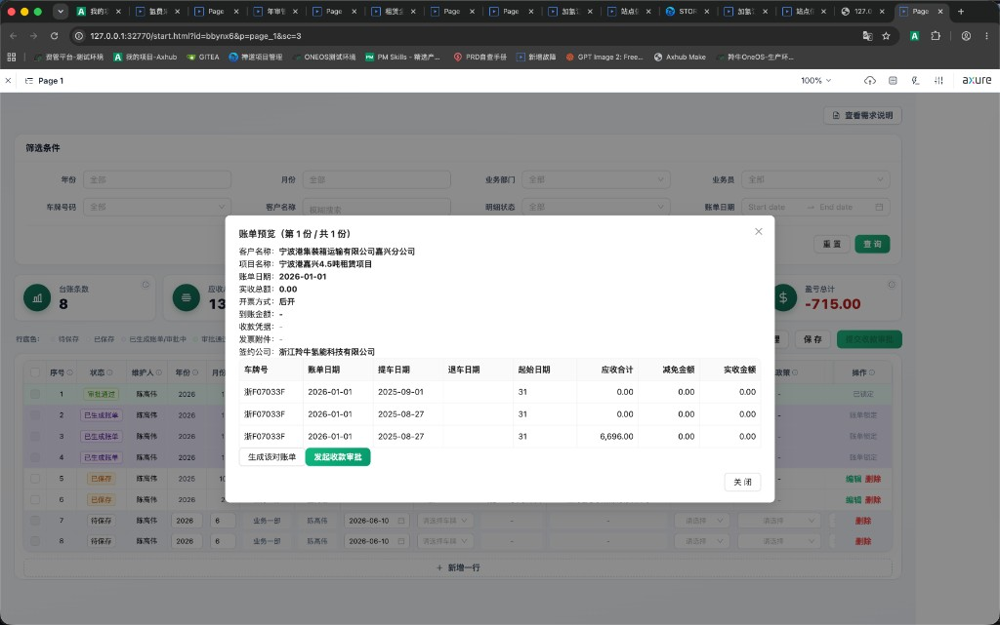

目录
一、角色与权限
| 角色 | 权限摘要 |
|---|---|
| 客服（操作员） | 仅可查看、维护本人台账明细；可新增/导入、保存、勾选已保存记录提交收款审批、在账单预览中生成对账单并发起审批。 |
| 客服主管 | 可查看全部客服明细；对「审批通过」记录可编辑、删除；无需执行保存/提交收款审批操作。 |
| 财务 | 在「账单管理」中对审批中账单执行审批：上传发票、填写到账金额、上传收款凭据；支持驳回。 |
二、明细状态总览
每条台账明细带有独立状态，与账单状态联动。请按顺序理解，不可跳步。
| 状态 | 标签色 | 说明 | 可否勾选 | 可否编辑 |
|---|---|---|---|---|
| 待保存 | 灰 | 新增一行或 CSV 导入后，尚未点击「保存」。 | 否 | 是（本人） |
| 已保存 | 橙 | 点击「保存」后；可勾选并提交收款审批。 | 是 | 需点「编辑」 |
| 已生成账单 | 紫 | 提交收款审批后已归入某份账单，待预览确认/发起审批。 | 否 | 否（账单锁定） |
| 审批中 | 蓝 | 已发起收款审批，等待财务处理。 | 否（禁用） | 否 |
| 审批通过 | 绿 | 财务审批闭环完成，到账与附件已回写。 | 否 | 仅主管 |
记忆要点：只有「已保存」可多选；「已生成账单」「审批中」在账单流程中锁定；审批通过后明细与账单均闭环。
三、端到端主流程
下图展示从录入到财务闭环的完整路径，含主要分支出口。
图 1 · 租赁业务台账端到端主流程（含取消/撤回分支）
四、操作员：新增与导入
4.1 新增一行
- 点击表格底部虚线按钮「+ 新增一行」，或工具栏（原型中底部为主入口）。
- 系统追加空白可编辑行，状态为 待保存，归属当前登录客服。
- 填写年份、月份、账单日期、车牌、客户等必填项；选择车牌后自动带出车型、客户、合同、标准成本等。
4.2 CSV 导入
- 点击「导入」→ 下载模板 → 填写后上传 .csv 文件。
- 解析成功的记录均为 待保存，归属当前客服。
- 导入后须点击「保存」才会变为 已保存。
五、操作员：保存与校验
5.1 保存规则
- 仅将本人 待保存 记录批量更新为 已保存。
- 保存前校验必填项：年份、月份、部门、业务员、账单日期、车牌、客户名称。
- 保存时触发系统比对警告（不阻断保存）：押金、合同标的租金与系统合同不一致时显示警告图标。
5.2 保存后编辑
已保存记录默认只读展示；需点击操作列「编辑」进入编辑模式，修改完成后点「完成」。
六、批量生成账单与预览确认
6.1 提交收款审批（拆单入口）
- 在明细表左侧勾选一条或多条 已保存 记录。
- 点击工具栏「提交收款审批」。
- 系统按拆单算法生成 1～N 份账单，明细状态变为 已生成账单。
- 自动打开「账单预览」弹窗，标题显示「第 x 份 / 共 y 份」，可逐份确认。
6.2 拆单算法（关键逻辑）
分组键 = 客户名称 + 账单年 + 账单月 + 合同编码（无合同则用项目名称）
同一分组键下的明细 → 合并为 1 份账单
支持一次勾选：多个客户、多个账单月、多个项目/合同
同一分组键下的明细 → 合并为 1 份账单
支持一次勾选：多个客户、多个账单月、多个项目/合同
| 勾选场景 | 拆单结果 |
|---|---|
| 同客户、同月、同一合同下 3 条车 | 1 份账单，含 3 条明细行 |
| 同客户、同月、两个不同合同/项目 | 2 份账单，各含对应明细 |
| 客户 A 1月 + 客户 B 10月 各勾选若干条 | 按客户×月份×项目分别拆成多份 |
6.3 账单预览卡片
每份账单预览包含：
- 摘要区：客户名称、项目名称、账单周期、账单日、实收总额、开票方式（先开/后开）、到账金额、签约公司
- 附件区：收款凭据、发票附件（审批前为「—」，财务填写后支持预览/下载）
- 明细表：车牌号、账单日期、提车/退车日期、起始日期、应收合计、减免金额、实收金额
- 底部操作：「生成该对账单」（PDF，含签约公司付款账户）、「发起收款审批」

图 2 · 账单预览弹窗（摘要卡片 + 明细表 + 操作按钮）
6.4 发起收款审批
- 在预览中点击「发起收款审批」→ 提示「收款审批已发起」。
- 该账单状态 → 审批中；所含明细 → 审批中。
- 自动切换至下一份待确认账单；全部处理完后关闭预览。
- 已生成账单同步出现在「账单管理」列表中。
七、账单管理与异常分支
7.1 账单管理列表
入口：工具栏「账单管理」（位于「保存」左侧）。列表字段：
| 字段 | 说明 |
|---|---|
| 状态 | 待确认 / 审批中 / 审批通过 / 已驳回 / 已取消 |
| 账单周期 | 如 2026年1月 |
| 客户名称、项目名称 | 拆单维度展示 |
| 实收金额 | 该账单下明细实收合计 |
| 操作 | 继续确认、取消账单、撤回、财务审批（原型模拟） |
7.2 异常分支流程
图 3 · 审批异常与回退分支
| 操作 | 适用状态 | 结果 |
|---|---|---|
| 取消账单 | 待确认、已驳回（非审批中） | 账单→已取消；明细 billId 清空，状态→已保存，可修改后重新提交 |
| 撤回 | 审批中 | 账单→待确认；明细→已生成账单 |
| 撤回 | 审批通过（原型） | 账单→待确认；明细→已生成账单，可再取消释放 |
| 财务驳回 | 审批中 | 账单→已驳回；明细→已生成账单；建议取消账单后修改重提 |
八、财务审批流（先开 / 后开）
开票方式取自车辆租赁合同配置，决定财务审批步骤数。
图 4 · 财务审批双分支（后开 / 先开）
| 开票方式 | 财务步骤 | 回写字段 | 闭环后状态 |
|---|---|---|---|
| 后开 | 一步：凭据 + 到账 + 发票 | 账单管理对应模块；明细列表同步 | 账单与明细均为审批通过 |
| 先开 | ① 发票附件 ② 凭据 + 到账 | 第一步后发票即可在账单中预览；第二步完成后到账回写 | 同上 |
到账金额：提交审批时显示「待财务填写」；审批通过前为「—」；财务填写后自动反写至账单管理与预览卡片。
九、关键算法与字段逻辑
9.1 起始日期
IF 提车日在账单月内 THEN 起始日期 = 提车日期（如 2025-10-15）
ELSE 起始日期 = 当月完整天数（如 10月 → 显示 31，非 10-01）
ELSE 起始日期 = 当月完整天数（如 10月 → 显示 31，非 10-01）
9.2 在租天数与平均天数
在租天数 = 自起始日期起至退车日（未退车则至月末），含首尾日
平均天数 = 在租天数 ÷ 当月天数（保留 2 位小数）
实际成本 = 标准成本 × 平均天数
平均天数 = 在租天数 ÷ 当月天数（保留 2 位小数）
实际成本 = 标准成本 × 平均天数
9.3 应收与实收
应收合计 = 应收租金 + 保险上浮 + 运维费(收) + 其他收入
减免金额 = 里程减免 + 其他减免
实收金额 = 手填；未收 = 应收合计 - 实收金额 - 减免
减免金额 = 里程减免 + 其他减免
实收金额 = 手填；未收 = 应收合计 - 实收金额 - 减免
9.4 合同匹配
根据 车牌 + 账单日期 匹配有效租赁合同，自动带出合同起止、月租、项目名、开票方式。合同日期/押金/租金与系统不一致时，保存后显示警告（可继续流程）。
9.5 账单实收总额
账单.实收总额 = Σ(该账单下各明细.实收金额)，保留 2 位小数
十、常见场景问答
| # | 问题 | 解答 |
|---|---|---|
| 1 | 为什么勾选框是灰的？ | 仅「已保存」可勾选。已生成账单、审批中、审批通过均禁用。 |
| 2 | 能否一次选多个客户？ | 可以。系统按客户×账单月×项目自动拆成多份账单。 |
| 3 | 同客户同月两个合同怎么拆？ | 每个合同/项目各生成 1 份账单，预览中逐份确认。 |
| 4 | 审批中能改明细吗？ | 不能。须撤回或驳回后取消账单，明细回已保存再改。 |
| 5 | 审批中能取消账单吗？ | 不能。须先「撤回」审批，或等待驳回后再取消。 |
| 6 | 先开和后开区别？ | 后开：财务一次上传凭据+到账+发票；先开：先发票、再到账。 |
| 7 | 保存时押金警告能提交吗？ | 可以。警告不阻断保存与收款审批，但建议核对后提交。 |
| 8 | 起始日期为什么显示 31？ | 提车日不在账单月内时，显示当月总天数而非月初日期。 |
| 9 | PDF 对账单含什么？ | 客户/项目/周期、明细表、实收总额、签约公司付款账户信息。 |
| 10 | 主管需要点保存吗？ | 不需要。主管主要维护审批通过后的历史数据。 |
十一、操作速查表
| 操作 | 前置条件 | 结果状态 |
|---|---|---|
| 新增/导入 | 登录为客服 | 明细 → 待保存 |
| 保存 | 本人待保存 + 必填完整 | 明细 → 已保存 |
| 提交收款审批 | 勾选已保存记录 | 拆单；明细 → 已生成账单；打开预览 |
| 生成该对账单 | 账单预览中 | 打开 PDF 打印预览 |
| 发起收款审批 | 账单待确认/已驳回 | 账单/明细 → 审批中 |
| 取消账单 | 非审批中 | 明细 → 已保存 |
| 撤回 | 审批中 | 明细 → 已生成账单 |
| 财务审批通过 | 审批中 + 附件/到账齐全 | 账单/明细 → 审批通过 |